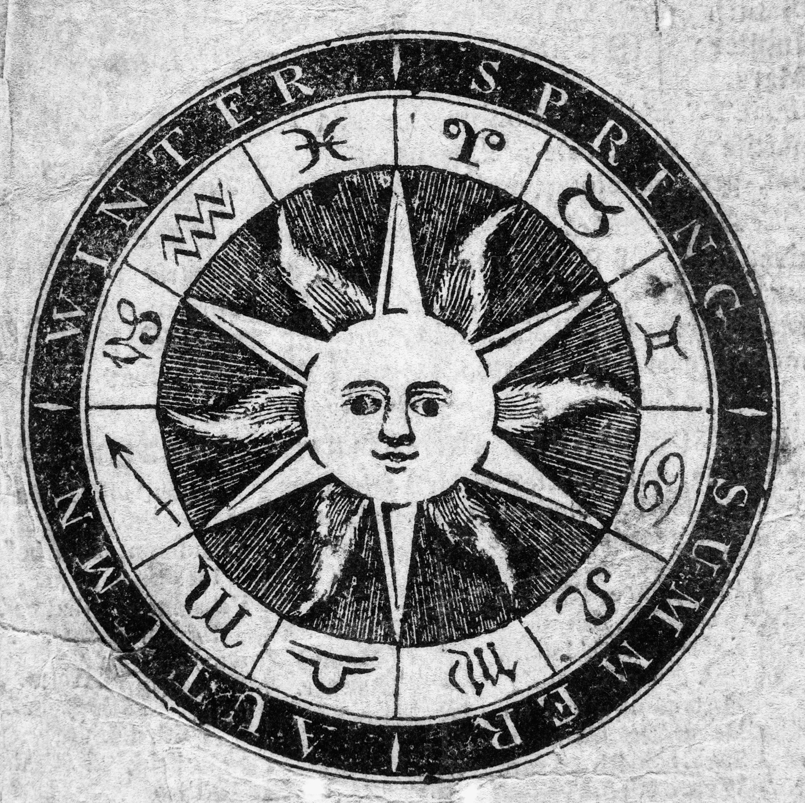
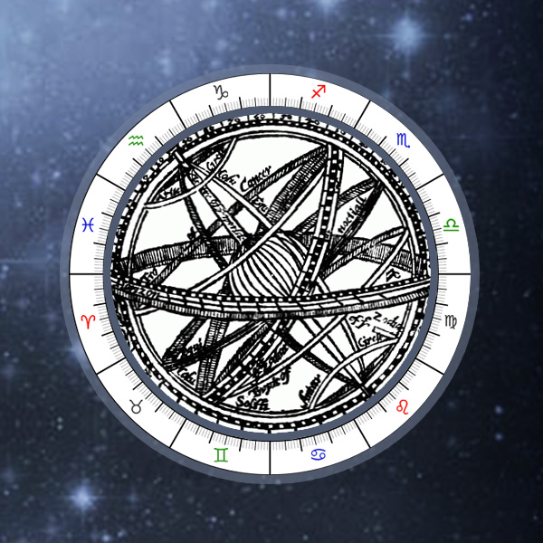

Background
Astrology has played a significant role in human culture
for several millenia. Organised systems of using the stars
to predict seasonal shifts, interpret divine messages, and dictate
how medicine should be applied are as old as the Ancient Babylonians,
with written descriptions of astrology dating back to 1800BC. However,
archaelogical evidence shows that the progress of lunar cycles were
tracked as early as 25,000 years ago, in addition to the many temples
and structures created by ancient civilisations that align
with the stars.
Astrology, though regarded as scientific until the 1700s, would lose its
academic status due to the advent of scientific observations in astrology-
most notably, the idea that the Sun and stars do not orbit the Earth (known
as heliocentrism).
Today, many use astrology in the form of horoscopes- star-based predictions
of fortune, compatibility between different people, and even future events.
Your Zodiac
Use the tool below to find out what your Zodiac sign is, and then follow
the link it generates to find out what that says about you.
Date of birth:

An image of the Sun and the 12 Zodiac signs
